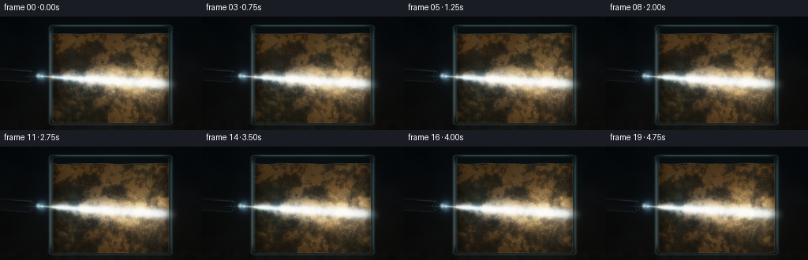
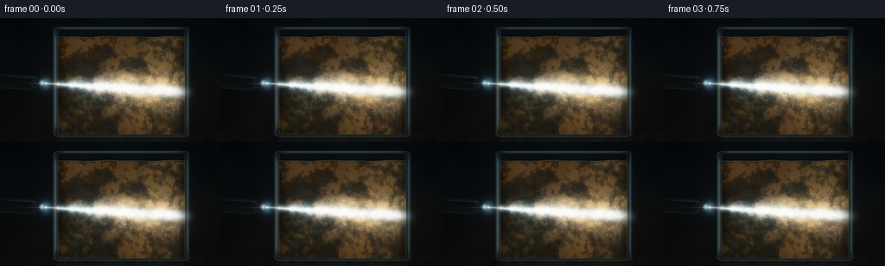

CODING AGENTS AS PIXEL WORLD MODELS
traex/DeepSeek-V4.1-Flash · phygen_049
点击播放 · 原生 RGB 像素
逐轮保存的候选
回放视频、检查图与代码变化。
每份候选均可单独播放。实际图片检查记录在下方工具轨迹中。
候选 01播放与检查图
点击播放 · 原生 RGB 像素


展开代码变化
--- 上一保存版本
+++ 本次保存版本
@@ -0,0 +1,460 @@
+from pathlib import Path
+import json
+import math
+
+import numpy as np
+from PIL import Image
+from scipy.ndimage import gaussian_filter, map_coordinates
+
+import artifact_io
+
+
+ROOT = Path(__file__).resolve().parent
+SPEC = json.loads((ROOT / "task_spec.json").read_text())
+W = int(SPEC["width"])
+H = int(SPEC["height"])
+N = int(SPEC["frames"])
+FPS = float(SPEC["fps"])
+
+# Render above the delivery resolution so glass edges and suspended particles
+# remain clean after Lanczos downsampling.
+SS = 4
+RW = W * SS
+RH = H * SS
+ASPECT = RW / RH
+EPS = 1e-7
+
+
+def smoothstep(a, b, value):
+ t = np.clip((value - a) / (b - a + EPS), 0.0, 1.0)
+ return t * t * (3.0 - 2.0 * t)
+
+
+def normalize_field(field, contrast=1.0):
+ field = field.astype(np.float32)
+ field = (field - field.mean()) / (field.std() + EPS)
+ return 0.5 + 0.5 * np.tanh(field * contrast)
+
+
+def mix_color(a, b, amount):
+ if amount.ndim == 2:
+ amount = amount[..., None]
+ return a * (1.0 - amount) + b * amount
+
+
+def sample_texture(texture, qx, qy):
+ height, width = texture.shape
+ px = np.clip(qx, 0.0, 1.0) * (width - 1)
+ py = np.clip(qy, 0.0, 1.0) * (height - 1)
+ return map_coordinates(texture, [py, px], order=1, mode="nearest").astype(np.float32)
+
+
+def rounded_box_distance(x, y, cx, cy, hx, hy, radius):
+ dx = np.abs(x - cx) - hx + radius
+ dy = np.abs(y - cy) - hy + radius
+ outside = np.sqrt(np.maximum(dx, 0.0) ** 2 + np.maximum(dy, 0.0) ** 2)
+ inside = np.minimum(np.maximum(dx, dy), 0.0)
+ return outside + inside - radius
+
+
+YY, XX = np.mgrid[0:RH, 0:RW].astype(np.float32)
+X = (XX + 0.5) / RW
+Y = (YY + 0.5) / RH
+
+# Multi-scale fields are sampled through a vortex-warped coordinate system.
+# This gives coherent clouds and filaments rather than independent frame noise.
+rng = np.random.default_rng(49017)
+raw_coarse = gaussian_filter(rng.normal(size=(RH, RW)).astype(np.float32), 28.0)
+raw_medium = gaussian_filter(rng.normal(size=(RH, RW)).astype(np.float32), 8.0)
+raw_fine = gaussian_filter(rng.normal(size=(RH, RW)).astype(np.float32), 2.2)
+raw_micro = gaussian_filter(rng.normal(size=(RH, RW)).astype(np.float32), 0.65)
+texture_coarse = normalize_field(raw_coarse, 0.95)
+texture_medium = normalize_field(raw_medium, 0.9)
+texture_fine = normalize_field(raw_fine, 0.8)
+texture_micro = normalize_field(raw_micro, 0.75)
+
+spark_seed = (rng.random((RH, RW)) < 0.0019).astype(np.float32)
+spark_texture = gaussian_filter(spark_seed, 0.75)
+spark_texture /= spark_texture.max() + EPS
+
+heavy_seed = (rng.random((RH, RW)) < 0.00042).astype(np.float32)
+heavy_texture = gaussian_filter(heavy_seed, 1.35)
+heavy_texture /= heavy_texture.max() + EPS
+
+# A fixed dust field for the thin beam segment in the air.
+air_dust = gaussian_filter((rng.random((RH, RW)) < 0.0011).astype(np.float32), 0.9)
+air_dust /= air_dust.max() + EPS
+
+# Scene geometry.
+TANK_CX = 0.548
+TANK_CY = 0.515
+TANK_HX = 0.302
+TANK_HY = 0.438
+OUTER_RADIUS = 0.020
+INNER_RADIUS = 0.013
+
+outer_sd = rounded_box_distance(X, Y, TANK_CX, TANK_CY, TANK_HX, TANK_HY, OUTER_RADIUS)
+inner_sd = rounded_box_distance(
+ X,
+ Y,
+ TANK_CX,
+ TANK_CY,
+ TANK_HX - 0.014,
+ TANK_HY - 0.014,
+ INNER_RADIUS,
+)
+outer_mask = outer_sd < 0.0
+inner_mask = inner_sd < 0.0
+
+SOURCE_X = 0.207
+SOURCE_Y = 0.527
+TARGET_X = 0.925
+TARGET_Y = 0.607
+beam_px = (TARGET_X - SOURCE_X) * ASPECT
+beam_py = TARGET_Y - SOURCE_Y
+beam_len = math.hypot(beam_px, beam_py)
+BEAM_DX = beam_px / beam_len
+BEAM_DY = beam_py / beam_len
+
+
+def scene_flow(t):
+ # Large, slowly rotating eddies plus a gentle shear carry the suspended
+ # mud across the tank. All motion remains continuous over the short clip.
+ vortices = (
+ (0.365 + 0.030 * math.sin(0.75 * t), 0.390 + 0.035 * math.cos(0.62 * t), 0.170, 1.00),
+ (0.645 + 0.034 * math.cos(0.58 * t), 0.640 + 0.043 * math.sin(0.72 * t), 0.205, -0.82),
+ (0.490 + 0.042 * math.sin(0.48 * t + 1.1), 0.760 + 0.025 * math.cos(0.53 * t), 0.150, 0.62),
+ )
+ qx = X + 0.011 * t + 0.010 * np.sin(5.2 * Y - 0.55 * t)
+ qy = Y - 0.004 * t + 0.008 * np.sin(4.4 * X + 0.43 * t)
+ for cx, cy, sigma, strength in vortices:
+ dx = (X - cx) * ASPECT
+ dy = Y - cy
+ influence = np.exp(-(dx * dx + dy * dy) / (2.0 * sigma * sigma))
+ qx += -strength * 0.065 * dy * influence
+ qy += strength * 0.055 * dx * influence
+ qx += 0.006 * np.sin(13.0 * qy + 0.8 * t)
+ qy += 0.005 * np.cos(11.0 * qx - 0.7 * t)
+ return np.clip(qx, 0.001, 0.999), np.clip(qy, 0.001, 0.999)
+
+
+def render_frame(frame_index):
+ t = frame_index / FPS
+ qx, qy = scene_flow(t)
+ coarse = sample_texture(texture_coarse, qx, qy)
+ medium = sample_texture(texture_medium, qx, qy)
+ fine = sample_texture(texture_fine, qx, qy)
+ micro = sample_texture(texture_micro, qx, qy)
+ sparks = sample_texture(spark_texture, qx, qy)
+ heavy = sample_texture(heavy_texture, qx, qy)
+
+ # Room and table: almost black, with a restrained cool bounce and a warm
+ # spill where the flashlight and muddy tank color the nearby air.
+ vertical = np.clip(Y, 0.0, 1.0)
+ bg_top = np.array([0.007, 0.014, 0.021], dtype=np.float32)
+ bg_bottom = np.array([0.024, 0.020, 0.016], dtype=np.float32)
+ image = mix_color(bg_top, bg_bottom, vertical[..., None] * 0.85)
+ wall_texture = sample_texture(texture_coarse, X * 0.78 + 0.11, Y * 0.72 + 0.14)
+ image += ((wall_texture - 0.5) * 0.010)[..., None] * np.array([0.55, 0.78, 1.0])
+
+ table = smoothstep(0.888, 0.955, Y)
+ table_texture = sample_texture(texture_medium, X * 0.72 + 0.2, Y * 0.4 + 0.2)
+ table_color = np.array([0.030, 0.025, 0.021], dtype=np.float32)
+ image = mix_color(image, table_color, table * 0.75)
+ image += (table * (table_texture - 0.5) * 0.014)[..., None] * np.array([1.0, 0.72, 0.43])
+
+ cool_pool = np.exp(
+ -((X - 0.54) / 0.43) ** 2 - ((Y - 0.51) / 0.44) ** 2
+ )
+ warm_pool = np.exp(
+ -((X - 0.60) / 0.34) ** 2 - ((Y - 0.63) / 0.28) ** 2
+ )
+ image += (cool_pool * 0.026)[..., None] * np.array([0.36, 0.70, 0.94])
+ image += (warm_pool * 0.025)[..., None] * np.array([0.95, 0.55, 0.23])
+
+ # Slight reflection beneath the glass, visible outside the tank footprint.
+ below_tank = smoothstep(0.93, 1.0, Y) * (1.0 - smoothstep(0.90, 1.02, np.abs(X - TANK_CX) / TANK_HX))
+ image += (below_tank * 0.016)[..., None] * np.array([0.44, 0.77, 0.82])
+
+ # The interior above the water is clear but blue-green glass.
+ air_tint = np.array([0.018, 0.035, 0.041], dtype=np.float32)
+ image = mix_color(image, air_tint, inner_mask.astype(np.float32) * 0.30)
+
+ # Waterline and turbid fluid body.
+ waterline = (
+ 0.151
+ + 0.0028 * np.sin(2.0 * math.pi * (3.4 * X + 0.07 * t))
+ + 0.0018 * np.sin(2.0 * math.pi * (7.1 * X - 0.11 * t + 0.35))
+ )
+ water_mask = inner_mask & (Y > waterline)
+ water_edge = smoothstep(waterline - 0.0015, waterline + 0.0025, Y)
+
+ density = np.clip(
+ 0.50 * coarse + 0.28 * medium + 0.15 * fine + 0.07 * micro,
+ 0.0,
+ 1.0,
+ )
+ density = smoothstep(0.18, 0.86, density)
+
+ deep = np.array([0.014, 0.031, 0.032], dtype=np.float32)
+ silt = np.array([0.150, 0.090, 0.038], dtype=np.float32)
+ bright_silt = np.array([0.355, 0.224, 0.094], dtype=np.float32)
+ fluid = mix_color(deep, silt, 0.30 + 0.55 * density)
+ fluid = mix_color(fluid, bright_silt, smoothstep(0.60, 0.93, density) * 0.30)
+
+ # Broad green-cyan and ochre variations keep the mud from reading as a
+ # single flat brown. Their motion follows the same vortices as the silt.
+ hue_wave = (
+ np.sin(8.5 * qx + 5.5 * qy + 0.52 * t)
+ + 0.65 * np.cos(11.0 * qx - 4.3 * qy - 0.38 * t)
+ )
+ green_veil = smoothstep(0.25, 1.1, hue_wave) * (0.25 + 0.75 * medium)
+ fluid += (green_veil * 0.020)[..., None] * np.array([0.18, 0.78, 0.58])
+ ochre_veil = smoothstep(0.15, 1.0, -hue_wave) * (0.35 + 0.65 * coarse)
+ fluid += (ochre_veil * 0.024)[..., None] * np.array([0.92, 0.48, 0.12])
+
+ # Geometry of the directed flashlight beam in a physically scaled frame.
+ rel_x = (X - SOURCE_X) * ASPECT
+ rel_y = Y - SOURCE_Y
+ along = rel_x * BEAM_DX + rel_y * BEAM_DY
+ across = -rel_x * BEAM_DY + rel_y * BEAM_DX
+ cone_width = 0.011 + 0.078 * smoothstep(0.0, 0.95, along)
+ cone_gate = smoothstep(-0.004, 0.012, along) * (1.0 - smoothstep(1.02, 1.22, along))
+ cone = np.exp(-0.5 * (across / (cone_width + EPS)) ** 2) * cone_gate
+ cone_halo = np.exp(-0.5 * (across / (cone_width * 2.8 + EPS)) ** 2) * cone_gate
+ beam_core = np.exp(-0.5 * (across / (cone_width * 0.28 + 0.0018)) ** 2) * cone_gate
+
+ # The water scatters the beam strongly; air carries only a faint shaft.
+ beam_water = cone * water_mask * (0.42 + 0.90 * density) * np.exp(-0.30 * np.maximum(along, 0.0))
+ beam_halo_water = cone_halo * water_mask * (0.12 + 0.22 * density) * np.exp(-0.23 * np.maximum(along, 0.0))
+ beam_air = cone * (~water_mask) * (~inner_mask) * 0.085
+ beam_air += cone_halo * (~water_mask) * 0.023
+ air_dust_glints = sample_texture(air_dust, X + 0.004 * t, Y - 0.006 * t)
+ beam_air += cone * np.maximum(air_dust_glints - 0.32, 0.0) * 0.16
+
+ warm_mix = np.clip(0.12 + 0.58 * smoothstep(0.10, 0.86, along) + 0.20 * density, 0.0, 0.86)
+ cool_beam = np.array([0.46, 0.80, 1.0], dtype=np.float32)
+ warm_beam = np.array([1.0, 0.64, 0.28], dtype=np.float32)
+ beam_tint = mix_color(cool_beam, warm_beam, warm_mix)
+
+ fluid += (beam_water * 0.95)[..., None] * beam_tint
+ fluid += (beam_halo_water * 0.62)[..., None] * beam_tint
+ fluid += (beam_core * water_mask * 0.72)[..., None] * np.array([0.78, 0.94, 1.0])
+
+ # Focused bands in the mud: narrow, irregular caustic ridges with a slower
+ # luminous envelope around the main shaft.
+ phase_a = 21.0 * X + 11.0 * Y + 8.5 * (coarse - 0.5) + 1.05 * t
+ phase_b = 13.5 * Y - 7.0 * X + 7.0 * (medium - 0.5) - 0.82 * t
+ ribbon_a = (0.5 + 0.5 * np.sin(phase_a)) ** 7
+ ribbon_b = (0.5 + 0.5 * np.sin(phase_b + 2.0 * coarse)) ** 5
+ caustic = ribbon_a * (0.35 + 0.65 * ribbon_b)
+ caustic *= water_mask * (0.10 + 1.25 * cone + 0.35 * cone_halo)
+ caustic *= 0.30 + 0.70 * density
+ caustic_tint = mix_color(
+ np.array([0.48, 0.88, 0.86], dtype=np.float32),
+ np.array([1.0, 0.66, 0.28], dtype=np.float32),
+ 0.28 + 0.62 * smoothstep(0.15, 0.9, along),
+ )
+ fluid += (caustic * 0.24)[..., None] * caustic_tint
+
+ # Thin, flowing particle seams add readable rotational structure.
+ seam = np.exp(-((medium - 0.52) / 0.055) ** 2)
+ seam *= 0.35 + 0.65 * smoothstep(0.12, 0.9, cone_halo + 0.25 * cone)
+ fluid += (seam * water_mask * 0.018)[..., None] * np.array([0.54, 0.66, 0.45])
+
+ # Suspended mud grains. Small grains form a continuous veil; the rarer
+ # heavy particles provide distinct moving highlights in the beam.
+ grain = smoothstep(0.12, 0.62, sparks) * (0.30 + 0.85 * fine)
+ heavy_glint = smoothstep(0.04, 0.62, heavy)
+ particle_light = 0.16 + 2.1 * cone + 0.55 * cone_halo
+ fluid += (grain * water_mask * particle_light * 0.34)[..., None] * np.array([1.0, 0.76, 0.42])
+ fluid += (heavy_glint * water_mask * particle_light * 0.56)[..., None] * np.array([1.0, 0.90, 0.67])
+
+ # Water is darker at the glass edges and near the bottom.
+ side_falloff = smoothstep(0.255, 0.315, X) * (1.0 - smoothstep(0.785, 0.845, X))
+ bottom_falloff = 1.0 - smoothstep(0.79, 0.935, Y)
+ fluid *= (0.56 + 0.44 * side_falloff * (0.75 + 0.25 * bottom_falloff))[..., None]
+
+ water_alpha = water_mask.astype(np.float32) * (0.92 + 0.08 * water_edge)
+ image = mix_color(image, fluid, water_alpha)
+
+ # The meniscus catches a thin warm-white highlight and a dark underside.
+ meniscus = np.exp(-((Y - waterline) / 0.0020) ** 2) * inner_mask
+ image += (meniscus * 0.12)[..., None] * np.array([0.72, 0.90, 0.83])
+ meniscus_shadow = np.exp(-((Y - (waterline + 0.007)) / 0.006) ** 2) * inner_mask
+ image *= 1.0 - meniscus_shadow[..., None] * 0.17
+
+ # Glass body, rim, and edge highlights.
+ glass_edge = np.exp(-0.5 * (outer_sd / 0.0042) ** 2)
+ inner_edge = np.exp(-0.5 * (inner_sd / 0.0024) ** 2)
+ image += (glass_edge * 0.11)[..., None] * np.array([0.42, 0.74, 0.83])
+ image += (inner_edge * 0.065)[..., None] * np.array([0.60, 0.91, 0.92])
+
+ left_glint = np.exp(-0.5 * ((X - (TANK_CX - TANK_HX + 0.005)) / 0.004) ** 2)
+ right_glint = np.exp(-0.5 * ((X - (TANK_CX + TANK_HX - 0.004)) / 0.0032) ** 2)
+ vertical_gate = smoothstep(0.10, 0.18, Y) * (1.0 - smoothstep(0.84, 0.93, Y))
+ image += (left_glint * vertical_gate * 0.16)[..., None] * np.array([0.74, 0.92, 0.95])
+ image += (right_glint * vertical_gate * 0.10)[..., None] * np.array([0.52, 0.88, 0.90])
+
+ top_glint = np.exp(-0.5 * ((Y - (TANK_CY - TANK_HY + 0.004)) / 0.0032) ** 2)
+ top_gate = smoothstep(0.255, 0.31, X) * (1.0 - smoothstep(0.79, 0.84, X))
+ image += (top_glint * top_gate * 0.14)[..., None] * np.array([0.75, 0.95, 0.94])
+
+ # Two soft reflected window strips on the front glass.
+ for center, width, strength in ((0.362, 0.018, 0.018), (0.727, 0.013, 0.014)):
+ strip = np.exp(-0.5 * ((X - center) / width) ** 2)
+ strip *= smoothstep(0.11, 0.22, Y) * (1.0 - smoothstep(0.72, 0.89, Y))
+ image += (strip * strength)[..., None] * np.array([0.36, 0.73, 0.84])
+
+ # Phone body, lying face down and entering from the left. The transform is
+ # in screen-scaled units so the slab keeps a convincing aspect ratio.
+ angle = math.atan2((TARGET_Y - SOURCE_Y), (TARGET_X - SOURCE_X) * ASPECT)
+ phone_cx, phone_cy = 0.069, 0.514
+ phone_half_length = 0.157
+ phone_half_width = 0.058
+ rx = (X - phone_cx) * ASPECT
+ ry = Y - phone_cy
+ local_u = rx * math.cos(angle) + ry * math.sin(angle)
+ local_v = -rx * math.sin(angle) + ry * math.cos(angle)
+ phone_sd = rounded_box_distance(
+ local_u,
+ local_v,
+ 0.0,
+ 0.0,
+ phone_half_length,
+ phone_half_width,
+ 0.020,
+ )
+ phone_mask = smoothstep(0.0035, -0.0035, phone_sd)
+ phone_rim = np.exp(-0.5 * ((np.abs(phone_sd) - 0.0022) / 0.0028) ** 2)
+
+ body_shade = np.clip(0.30 + 0.45 * (local_v / phone_half_width + 1.0) * 0.5, 0.0, 1.0)
+ phone_color = mix_color(
+ np.array([0.006, 0.008, 0.010], dtype=np.float32),
+ np.array([0.036, 0.044, 0.051], dtype=np.float32),
+ body_shade,
+ )
+ phone_highlight = np.exp(-0.5 * ((local_v + phone_half_width * 0.72) / 0.0028) ** 2)
+ phone_highlight *= phone_mask * (0.35 + 0.65 * smoothstep(-0.14, 0.12, local_u))
+ phone_color += (phone_highlight * 0.14)[..., None] * np.array([0.44, 0.68, 0.75])
+ image = mix_color(image, phone_color, phone_mask)
+ image += (phone_rim * phone_mask * 0.060)[..., None] * np.array([0.46, 0.66, 0.72])
+
+ # Camera island, lens rings, and the small flashlight emitter.
+ def circle_ring(cx, cy, radius, thickness, feather):
+ dx = (X - cx) * ASPECT
+ dy = Y - cy
+ r = np.sqrt(dx * dx + dy * dy)
+ return np.exp(-0.5 * ((r - radius) / feather) ** 2) * smoothstep(radius + thickness, radius, r)
+
+ camera_center_x = 0.169
+ camera_center_y = 0.523
+ island_dx = (X - camera_center_x) * ASPECT
+ island_dy = Y - camera_center_y
+ island_r = np.sqrt(island_dx * island_dx + island_dy * island_dy)
+ island = smoothstep(0.047, 0.043, island_r) * phone_mask
+ image = mix_color(image, np.array([0.018, 0.022, 0.025], dtype=np.float32), island * 0.92)
+ island_rim = np.exp(-0.5 * ((island_r - 0.0445) / 0.0018) ** 2) * phone_mask
+ image += (island_rim * 0.09)[..., None] * np.array([0.38, 0.56, 0.62])
+
+ for lens_x, lens_y, lens_r in ((0.159, 0.496, 0.0145), (0.159, 0.548, 0.0145)):
+ ring = circle_ring(lens_x, lens_y, lens_r, 0.006, 0.0018)
+ lens_dx = (X - lens_x) * ASPECT
+ lens_dy = Y - lens_y
+ lens = np.exp(-(lens_dx * lens_dx + lens_dy * lens_dy) / (lens_r * lens_r * 0.72))
+ image += (ring * 0.15)[..., None] * np.array([0.30, 0.50, 0.57])
+ image = mix_color(image, np.array([0.006, 0.012, 0.018], dtype=np.float32), lens * phone_mask * 0.9)
+
+ emitter_x, emitter_y = 0.190, 0.523
+ emitter_dx = (X - emitter_x) * ASPECT
+ emitter_dy = Y - emitter_y
+ emitter_r = np.sqrt(emitter_dx * emitter_dx + emitter_dy * emitter_dy)
+ emitter_ring = np.exp(-0.5 * ((emitter_r - 0.0155) / 0.0018) ** 2) * phone_mask
+ image += (emitter_ring * 0.17)[..., None] * np.array([0.56, 0.78, 0.83])
+ emitter_glow = np.exp(-0.5 * (emitter_r / 0.012) ** 2)
+ image += (emitter_glow * 0.75)[..., None] * np.array([0.73, 0.94, 1.0])
+
+ # Add the beam above the scene. It starts at the flashlight and passes
+ # through the near glass wall, water, far glass wall, and into the room.
+ image += (beam_air * 0.58)[..., None] * beam_tint
+ image += (beam_water * 0.24)[..., None] * beam_tint
+ image += (beam_core * (water_mask | (~inner_mask)) * 0.38)[..., None] * np.array([0.82, 0.97, 1.0])
+
+ # Entrance flare where the beam meets the first glass surface.
+ entry_x = TANK_CX - TANK_HX + 0.012
+ entry_y = SOURCE_Y + (entry_x - SOURCE_X) * (TARGET_Y - SOURCE_Y) / (TARGET_X - SOURCE_X)
+ entry_dx = (X - entry_x) * ASPECT
+ entry_dy = Y - entry_y
+ entry_r = np.sqrt(entry_dx * entry_dx + entry_dy * entry_dy)
+ entry_glow = np.exp(-0.5 * (entry_r / 0.020) ** 2)
+ entry_core = np.exp(-0.5 * (entry_r / 0.006) ** 2)
+ image += (entry_glow * 0.23)[..., None] * np.array([1.0, 0.73, 0.35])
+ image += (entry_core * 0.42)[..., None] * np.array([0.85, 0.98, 1.0])
+
+ # Flashlight halo and short anamorphic streak make the source read clearly.
+ source_dx = (X - SOURCE_X) * ASPECT
+ source_dy = Y - SOURCE_Y
+ source_r = np.sqrt(source_dx * source_dx + source_dy * source_dy)
+ source_core = np.exp(-0.5 * (source_r / 0.0055) ** 2)
+ source_halo = np.exp(-0.5 * (source_r / 0.026) ** 2)
+ source_wide = np.exp(-0.5 * (source_r / 0.055) ** 2)
+ image += (source_core * 1.05)[..., None] * np.array([0.95, 1.0, 1.0])
+ image += (source_halo * 0.38)[..., None] * np.array([0.52, 0.84, 1.0])
+ image += (source_wide * 0.075)[..., None] * np.array([0.25, 0.55, 0.90])
+ streak = np.exp(-0.5 * (source_dy / 0.0023) ** 2) * np.exp(-0.5 * (source_dx / 0.080) ** 2)
+ image += (streak * 0.28)[..., None] * np.array([0.48, 0.83, 1.0])
+
+ # Fine dust in the air, only where the shaft can reveal it.
+ air_motes = smoothstep(0.20, 0.75, sample_texture(spark_texture, X + 0.008 * t, Y - 0.004 * t))
+ image += (air_motes * beam_air * 0.32)[..., None] * np.array([0.72, 0.92, 1.0])
+
+ # Glass front is subtly tinted again after the beam, grounding the water
+ # behind a physical surface.
+ image *= 1.0 - inner_mask[..., None] * 0.018
+
+ # Bloom is computed only from bright highlights, then tone-mapped to keep
+ # the small particles crisp while allowing the flashlight core to glow.
+ luminance = image[..., 0] * 0.2126 + image[..., 1] * 0.7152 + image[..., 2] * 0.0722
+ highlights = image * np.maximum(luminance - 0.56, 0.0)[..., None]
+ bloom = np.empty_like(highlights)
+ for channel in range(3):
+ bloom[..., channel] = gaussian_filter(highlights[..., channel], 5.5)
+ image += bloom * 0.52
+
+ # Gentle vignette and a static, very fine sensor grain. Static grain avoids
+ # adding visual churn without changing the fluid motion.
+ vignette = 1.0 - 0.27 * smoothstep(0.45, 1.05, np.sqrt(((X - 0.52) / 0.63) ** 2 + ((Y - 0.51) / 0.76) ** 2))
+ image *= vignette[..., None]
+ grain = (sample_texture(texture_micro, X * 0.98 + 0.01, Y * 0.98 + 0.01) - 0.5) * 0.012
+ image += grain[..., None]
+
+ # Highlight compression and a subtle lifted-black curve.
+ image = np.maximum(image, 0.0)
+ image = 1.0 - np.exp(-image * 1.52)
+ image = np.power(image, 0.92)
+ image = image * 0.985 + 0.005
+
+ # Sub-pixel chromatic separation on the final downsample adds a little
+ # optical realism without softening the main image.
+ image8 = np.clip(image * 255.0, 0.0, 255.0).astype(np.uint8)
+ rgb = Image.fromarray(image8, mode="RGB")
+ r, g, b = rgb.split()
+ r = r.transform(r.size, Image.Transform.AFFINE, (1.0, 0.0, 0.30, 0.0, 1.0, 0.0), resample=Image.Resampling.BILINEAR)
+ b = b.transform(b.size, Image.Transform.AFFINE, (1.0, 0.0, -0.30, 0.0, 1.0, 0.0), resample=Image.Resampling.BILINEAR)
+ rgb = Image.merge("RGB", (r, g, b))
+ rgb = rgb.resize((W, H), Image.Resampling.LANCZOS)
+ return np.asarray(rgb, dtype=np.uint8)
+
+
+def main():
+ frames = []
+ for frame_index in range(N):
+ frames.append(render_frame(frame_index))
+ print(f"rendered {frame_index + 1:02d}/{N}")
+ frames = np.stack(frames, axis=0)
+ artifact_io.save(frames, ROOT)
+ print(f"saved {frames.shape} at {FPS:g} fps")
+
+
+if __name__ == "__main__":
+ main()
可观测工具轨迹
实际执行的命令与返回图片。
命令 1exit 0
/bin/bash -c 'cat prompt.txt'
命令 2exit 0
/bin/bash -c 'cat GENERATION_RULES.md'
命令 3exit 0
/bin/bash -c 'cat task_spec.json'
命令 4exit 0
/bin/bash -c "find . -maxdepth 2 -type f -printf '%p\\n' | sort | head -200"
命令 5exit 0
/bin/bash -c "sed -n '1,240p' artifact_io.py"
命令 6exit 0
/bin/bash -c "sed -n '1,240p' player_template.html"
命令 7exit 0
/bin/bash -c "python - <<'PY'
import importlib
for m in ['numpy','PIL','cv2','imageio','matplotlib','scipy','torch']:
try:
mod=importlib.import_module(m)
print(m, getattr(mod,'__version__','ok'))
except Exception as e:
print(m, 'MISSING', type(e).__name__)
PY"命令 8exit 0
/bin/bash -c 'MPLCONFIGDIR=.tmp/mpl python generate.py'
命令 9exit 0
/bin/bash -c "python - <<'PY'
from PIL import Image
import numpy as np
for f in [0,5,10,15,19]:
a=np.asarray(Image.open(f'frames/{f:02d}.png')).astype(float)/255
lum=a@np.array([.2126,.7152,.0722])
print(f, 'mean', a.mean((0,1)).round(4), 'lum', lum.mean().round(4), 'p99', np.percentile(lum,99).round(3), 'clip', (a>=.999).mean().round(5), 'std', lum.std().round(3))
# regions: source, tank, upper, lower
for name,ys,xs in [('src',slice(62,92),slice(43,69)),('tank',slice(20,135),slice(63,218)),('water',slice(65,135),slice(63,218)),('air',slice(0,64),slice(0,256))]:
q=a[ys,xs]; print(' ',name, q.mean((0,1)).round(3), q.max().round(2))
PY"命令 10exit 0
/bin/bash -c 'du -h frames/*.png inspection.png index.html pixels.npz | tail -10 && identify inspection.png frames/00.png 2>/dev/null || true'
命令 11exit 0
/bin/bash -c "python - <<'PY'
from PIL import Image
import numpy as np
chars=' .,:;irsXA253hMHGS#9B&@'
for f in [0,10,19]:
im=Image.open(f'frames/{f:02d}.png').convert('L').resize((96,36))
a=np.asarray(im).astype(float)/255
# perceptual nonlinearity, print ascii
a=np.clip(a**0.55,0,1)
print('\\nFRAME',f)
for row in a:
print(''.join(chars[min(len(chars)-1,int(v*(len(chars)-1)))] for v in row))
PY"命令 12exit 0
/bin/bash -c "python - <<'PY'
from PIL import Image
import numpy as np
f=np.stack([np.asarray(Image.open(f'frames/{i:02d}.png')).astype(np.float32) for i in range(20)])
d=np.abs(np.diff(f,axis=0))
print('diff mean/min/max',d.mean(),d.min(),d.max())
print('per step mean',np.round(d.mean((1,2,3)),2))
# consecutive spatial correlation and mean frame difference in water crop
for i in range(19):
a=f[i,62:136,63:218].mean(2); b=f[i+1,62:136,63:218].mean(2)
corr=np.corrcoef(a.ravel(),b.ravel())[0,1]
if i%3==0 or i==18: print(i, 'water corr',round(float(corr),4),'mad',round(float(np.abs(a-b).mean()),3))
# mean luminance grid 8x16 frame0/10/19
for i in [0,10,19]:
lum=f[i].mean(2)
blocks=lum.reshape(9,16,16,16).mean((1,3))
print('\\nframe',i)
for row in blocks: print(' '.join(f'{v:3.0f}' for v in row))
PY"命令 13exit 0
/bin/bash -c "python - <<'PY'
from PIL import Image, ImageEnhance, ImageFilter
import numpy as np
chars=' .,:;irsXA253hMHGS#9B&@'
for f in [0,10,19]:
im=Image.open(f'frames/{f:02d}.png').crop((35,35,235,135)).convert('L')
a=np.asarray(im.resize((100,50))).astype(float)/255
a=np.clip(a**0.52,0,1)
print('\\nWATER CROP FRAME',f)
for row in a:
print(''.join(chars[min(len(chars)-1,int(v*(len(chars)-1)))] for v in row))
PY"命令 14exit 1
/bin/bash -c "python - <<'PY'
from pathlib import Path
import json
import numpy as np
from PIL import Image
spec=json.loads(Path('task_spec.json').read_text())
frames=np.load('pixels.npz')['pixels']
print('pixels',frames.shape,frames.dtype)
assert frames.shape == (spec['frames'],spec['height'],spec['width'])
assert len(list(Path('frames').glob('*.png'))) == spec['frames']
for p in sorted(Path('frames').glob('*.png')):
im=Image.open(p)
assert im.size == (spec['width'],spec['height']) and im.mode == 'RGB'
print('png sequence: OK')
html=Path('index.html').read_text()
print('index bytes',len(html),'ready marker', '__pixelReady' in html, 'data placeholder absent', '__DATA__' not in html)
print('artifacts', sorted(p.name for p in Path('.').glob('*') if p.is_file()))
PY"保存候选 1 份；完成命令 14 次；可验证图片返回 0 张。原始 API 响应与完整日志保留在本地。